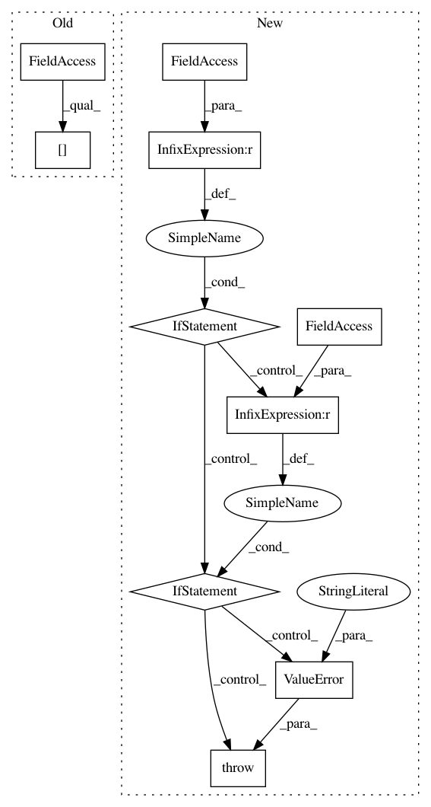

f7ed8f1b43044d87a3f527b75e1ad9e9e6cb2894,methods/shogun/linear_regression.py,SHOGUN_LINEARREGRESSION,metric,#SHOGUN_LINEARREGRESSION#,41
Before Change
metric["runtime"] = totalTimer.ElapsedTime()
if len(self.data) == 3:
confusionMatrix = Metrics.ConfusionMatrix(self.data[2], predictions)
metric["ACC"] = Metrics.AverageAccuracy(confusionMatrix)
metric["MCC"] = Metrics.MCCMultiClass(confusionMatrix)
metric["Precision"] = Metrics.AvgPrecision(confusionMatrix)
After Change
elif self.solver == "newton":
model.set_solver_type(ST_NEWTON)
elif self.solver == "direct":
model.set_solver_type(ST_DIRECT)
elif self.solver == "elasticnet":
model.set_solver_type(ST_ELASTICNET)
elif self.solver == "block_norm":
model.set_solver_type(ST_BLOCK_NORM)
else:
raise ValueError("Provided solver not supported by current benchmark")
model.train()
if len(self.data) >= 2:
In pattern: SUPERPATTERN
Frequency: 3
Non-data size: 10
Instances
Project Name: mlpack/benchmarks
Commit Name: f7ed8f1b43044d87a3f527b75e1ad9e9e6cb2894
Time: 2019-04-24
Author: rukman.sai2@gmail.com
File Name: methods/shogun/linear_regression.py
Class Name: SHOGUN_LINEARREGRESSION
Method Name: metric
Project Name: nilearn/nilearn
Commit Name: 48282d57a0f11094d71c7310898ab347e6b847b3
Time: 2019-03-25
Author: gilles.de.hollander@gmail.com
File Name: nilearn/signal.py
Class Name:
Method Name: clean
Project Name: neurodsp-tools/neurodsp
Commit Name: 08be819a5fd8edd74a59dcc363c9e7694ca009d2
Time: 2019-09-01
Author: tdonoghue@ucsd.edu
File Name: neurodsp/utils/outliers.py
Class Name:
Method Name: remove_nans